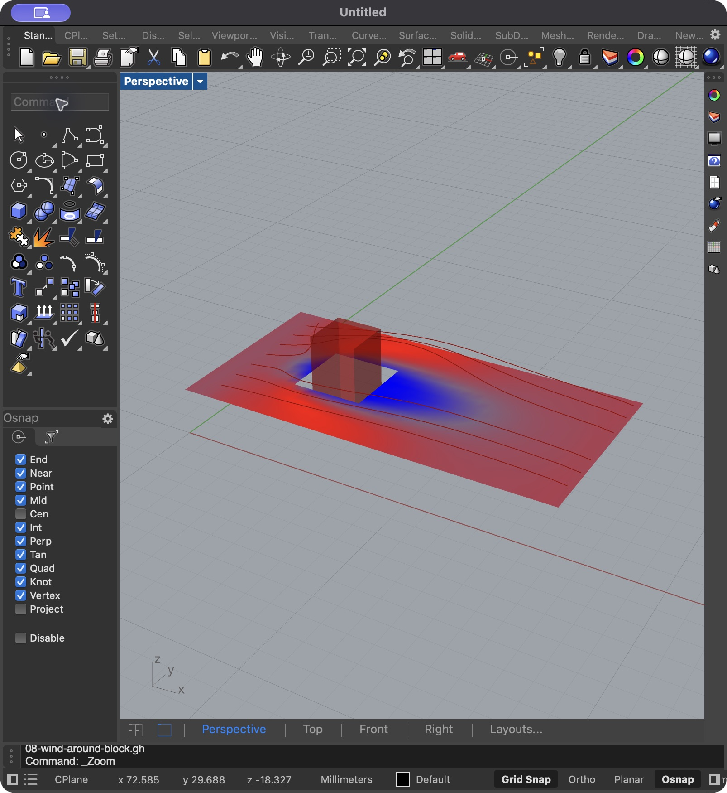
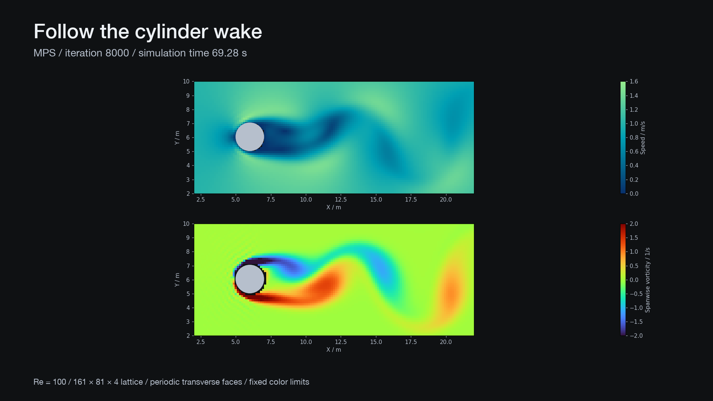
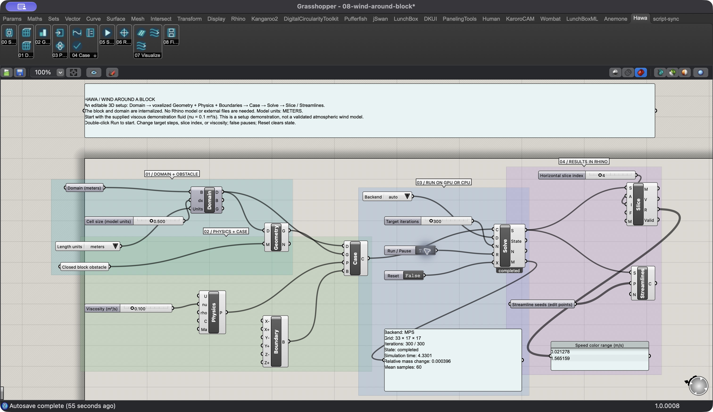
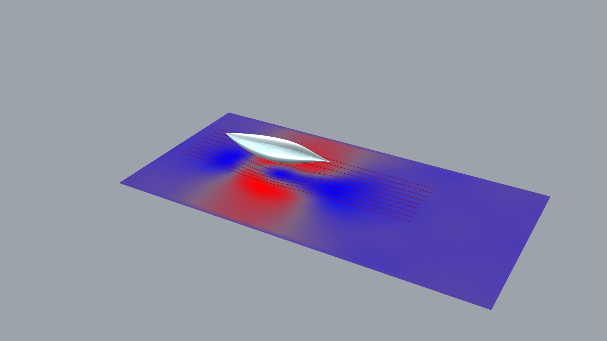

v0.3.0 · ExperimentalHawa
GPU flow simulation
inside Rhino.
Hawa runs a lattice Boltzmann solver in Rhino’s Python runtime. Define the case in Grasshopper. View the velocity and pressure in Rhino.
Rhino installs the Python dependencies on first use. The solver runs in Rhino’s process.

300 iterations.Hawa 0.4 preview
The new videos demonstrate responsive search, 3D views, local airfoil data and timed recordings. Version 0.4 is an experimental preview. The download below remains the published v0.3 package.
Inspect the fields
Show the domain wireframe. Trace 3D tubes. Select pressure, Cp, speed, vorticity or Q. Share blue-green or spectrum colors across planes, contours and surfaces.
Control repeated runs
Hawa Search advances after each completed result. Pause and cancel work at solver checkpoints. Use example 10 for this workflow.

Watch the new Tools video and Wake video. Both use actual simulation fields and captions. Earlier-release walkthroughs remain in the gallery.
Workflow
Each component has one task. Connect the components to define the case and inspect its results.
- 1.1
Define the domain
Create a uniform lattice from a box. Use Wind Tunnel to align the domain with the wind.
- 1.2
Define the case
Voxelize closed meshes. Set the speed, viscosity, density, collision model, and face boundaries.
- 1.3
Run the solver
Select a backend. Use Run to start or pause the solver. Use Reset to clear the state.
- 1.4
Inspect the result
Display a field slice. Sample velocity and pressure at points. Trace streamlines through a field snapshot.

Search a hull shape
Example 09 links three hull shape sliders to Galapagos. Hawa completes each CFD run before it emits fitness.

Change the shape
Change the bow, stern, and beam / draft. Keep length and volume fixed. Enable evaluation. Open Galapagos and start the search.
The recorded MPS search completed one population of ten genomes. Reinstating the selected hull reproduced its score.
Watch the hull demo on YouTube ↗
Read the hull guide ↗Videos
The videos use captions and screenshots from the verified Rhino sessions. Each video includes its controls, results, and verification limits.
The videos have captions and no audio. View the source captures ↗
Install
Download the package. Copy the complete folder. Open a supplied definition.
Copy the plugin folder
Place the complete
Hawafolder in Grasshopper’s Libraries directory. Keep the Python source beside the.ghafile. Restart Rhino.Open the starter example
Open
01-tgv3d-bgk.gh. Rhino installs the pinned dependencies. This first setup needs internet access.Select a backend
Select
auto. Double-click Run / Pause. Keep Grasshopper open while you inspect the Rhino preview.Change the controls
Change the field, slice, or target iteration count. Set Run to false to pause. Toggle Reset to clear the state.
Backends
PyTorch runs the tensor engine on the selected device. Apple GPU acceleration uses MPS.
| Backend | Hardware | Verification |
|---|---|---|
mps | Apple Silicon GPU | Embedded Rhino and headless Python checks passed. |
cpu | CPU | Python engine and reference comparisons passed. |
cuda:0 | NVIDIA GPU | The selector supports CUDA. Hardware checks remain open. |
Auto checks the available devices. An explicit device request reports an error if that device is unavailable. Windows installation checks remain open.
Verification
The checks cover the Python engine, saved Grasshopper graphs, and visible Rhino runs.
Completed checks
83Hawa tests passed. The suite skipped29tests.419upstream tests passed. The suite skipped884tests.8saved Grasshopper graphs reopened and completed25MPS steps with valid slice meshes.- The visible vortex run completed
200iterations. The block run completed300iterations. - The hull definition passed closure, volume, Galapagos links, result mesh, and idle-reopen checks.
Source and attribution
The source includes the license notices and the pinned upstream revisions.
Lettuce supplies the numerical engine. Hawa includes a Python 3.9 compatibility port and retains the MIT notices.
Butterfly informs the workflow. Its license is GPL-3.0+. Hawa contains no Butterfly code or assets.
Monad System supplies the visual tokens and web styles. The website and video renderer use the same pinned palette.